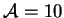
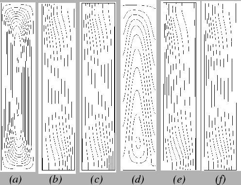
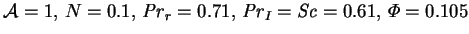
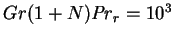
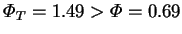
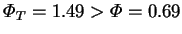
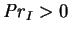
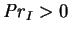

Solutions were obtained by the means described above (§5.1). The mesh was that of §5.1.5 and figure 5.3, except that for the narrowest cavity ( ; see fig. 5.10 below), the number of elements in the vertical direction was doubled to 32. The results of two sample runs are plotted in figure 5.8.
|  |
That the mesh is sufficiently fine was demonstrated by the grid independence tests of §5.2.1. Further confidence can be derived from the agreement between the finite element and analytic solutions in the fully developed regions (§5.5; figs 5.9 - 5.11).
A third check on the accuracy of the solutions was obtained by
comparing the
results for several cases with those of the parallel FIDAP
(Fluid Dynamics International 1996)
solutions of Dr Jonathan Harris (McBain & Harris 1998).
The solutions generated by FIDAP and Fastflo were found to agree closely.
For example, for
 and
, using similar 12 12 nonuniform
meshes of quadratic elements, the integrated mass and energy transfer
rates agreed to within 0.6% and 0.02%, respectively.
12 nonuniform
meshes of quadratic elements, the integrated mass and energy transfer
rates agreed to within 0.6% and 0.02%, respectively.
That Gill's centrosymmetry properties do not apply when transpiration
is introduced (
 ) is readily apparent in
figure 5.8.
Compare, for example, the stream-lines
(figs 5.8a,d) in the
`departure corners' (top-right and bottom-left). The most pronounced
effect of the interfacial velocity in the temperature (e) and mass
fraction
(f) distributions is the reduction of the gradients normal to the
hot wall (right) with a corresponding increase at the cold
wall (left). The combined influence of the interdiffusion effect and
the variation of specific heat (remembering that these cannot be
separated--see §2.1.3)
is most obvious in the dissimilarity of the
temperature and mass fraction profiles across the fully developed
region (temperature is more curved, since
)
and the extreme stretching of the isotherms in the top-right corner of
figure 5.8(e):
in this region, the mixture is rich in vapour (
) is readily apparent in
figure 5.8.
Compare, for example, the stream-lines
(figs 5.8a,d) in the
`departure corners' (top-right and bottom-left). The most pronounced
effect of the interfacial velocity in the temperature (e) and mass
fraction
(f) distributions is the reduction of the gradients normal to the
hot wall (right) with a corresponding increase at the cold
wall (left). The combined influence of the interdiffusion effect and
the variation of specific heat (remembering that these cannot be
separated--see §2.1.3)
is most obvious in the dissimilarity of the
temperature and mass fraction profiles across the fully developed
region (temperature is more curved, since
)
and the extreme stretching of the isotherms in the top-right corner of
figure 5.8(e):
in this region, the mixture is rich in vapour ( large),
so that, since
, the effective Prandtl number,
large),
so that, since
, the effective Prandtl number,
One of the most obvious features of figure 5.8 is that in
(a),
the entire boundary is a stream-line, whereas in (d), stream-lines
intersect the vertical walls. Since, in general, a stream-line
originating on the right wall does not intersect the left wall at the
same height,  , there is a net vertical mass flow through the central
portion of the cavity. The horizontal surfaces are impermeable, though,
so that in the end-zones the net contribution of mass from the vertical
walls at a particular level must be nonzero (positive in the lower
portion, and negative above). The contribution in the
fully developed portion vanishes since the horizontal
component of velocity there is uniform, by (4.39).
The reason for the departure in the end-zones is the shifting of the
concentration isopleths by the convection cell. For example, the
gradients are clearly steeper in the `starting corners' (bottom-right
and top-left) in figure 5.8(f).
Because the net vertical mass flow rate depends on the turning flow near the
ends, no information about it can be gained from the
fully developed solution; therefore,
, there is a net vertical mass flow through the central
portion of the cavity. The horizontal surfaces are impermeable, though,
so that in the end-zones the net contribution of mass from the vertical
walls at a particular level must be nonzero (positive in the lower
portion, and negative above). The contribution in the
fully developed portion vanishes since the horizontal
component of velocity there is uniform, by (4.39).
The reason for the departure in the end-zones is the shifting of the
concentration isopleths by the convection cell. For example, the
gradients are clearly steeper in the `starting corners' (bottom-right
and top-left) in figure 5.8(f).
Because the net vertical mass flow rate depends on the turning flow near the
ends, no information about it can be gained from the
fully developed solution; therefore,  can only be evaluated
a posteriori.
can only be evaluated
a posteriori.